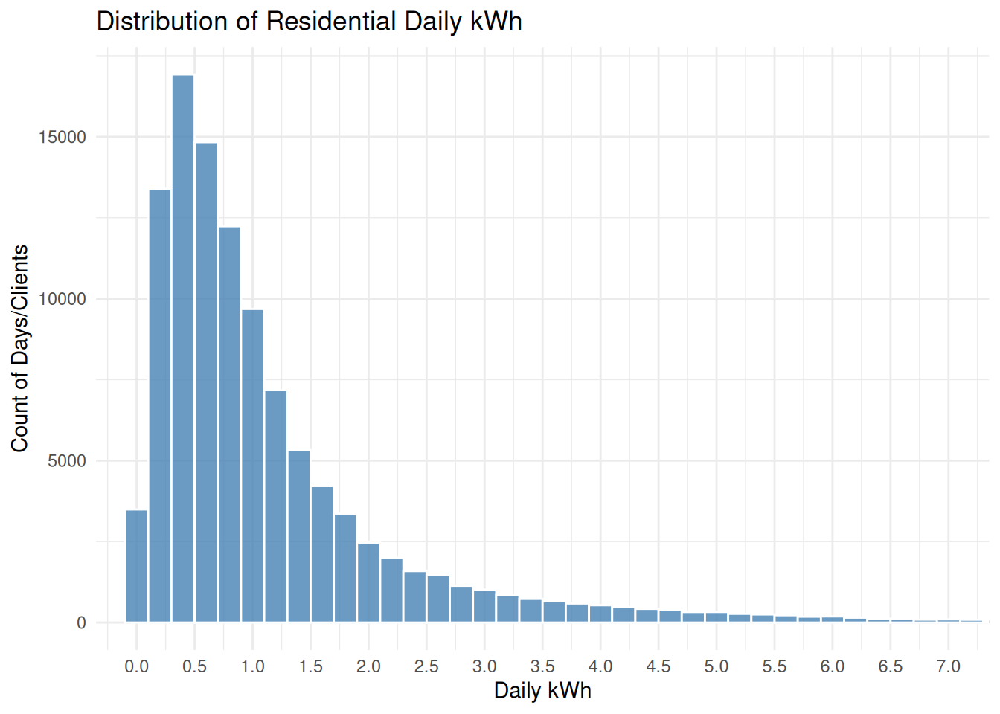
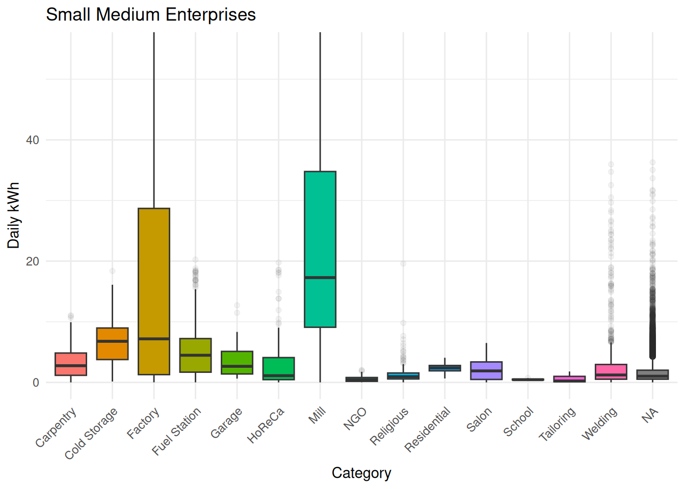
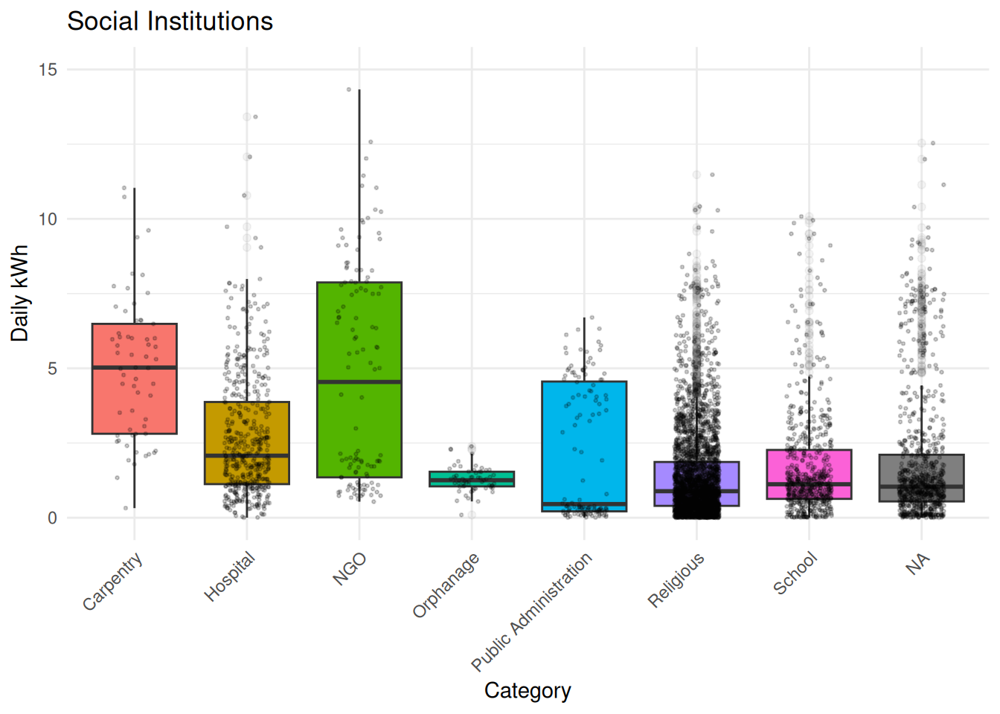
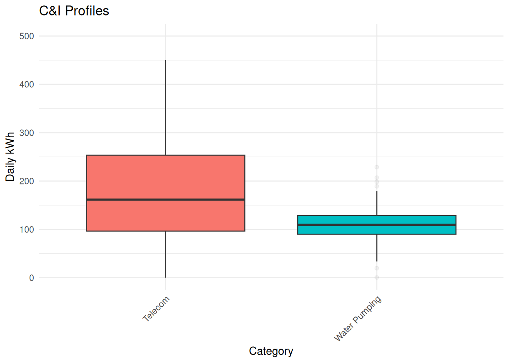
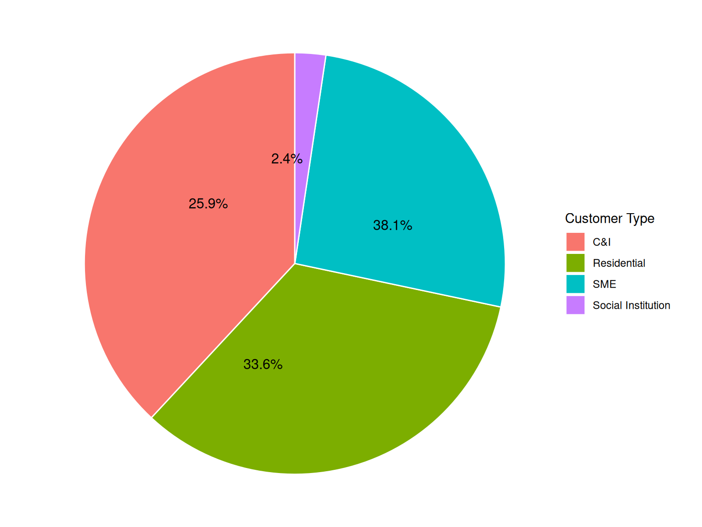
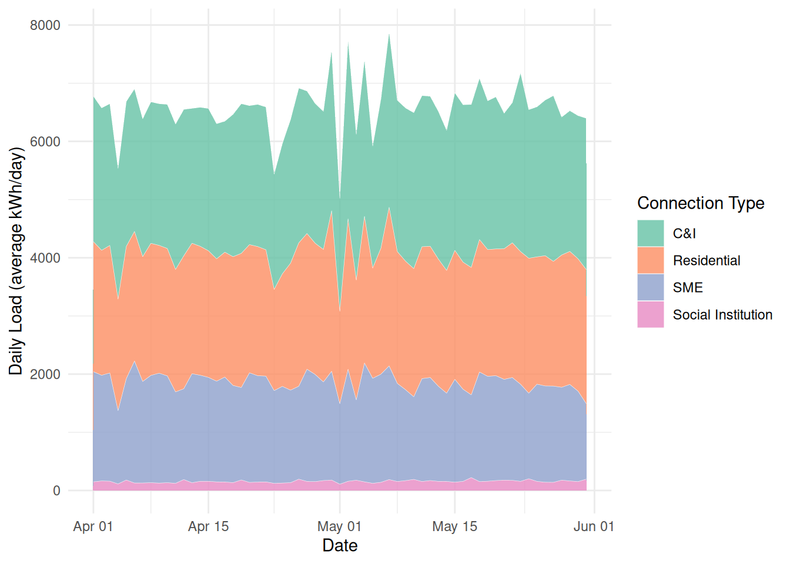
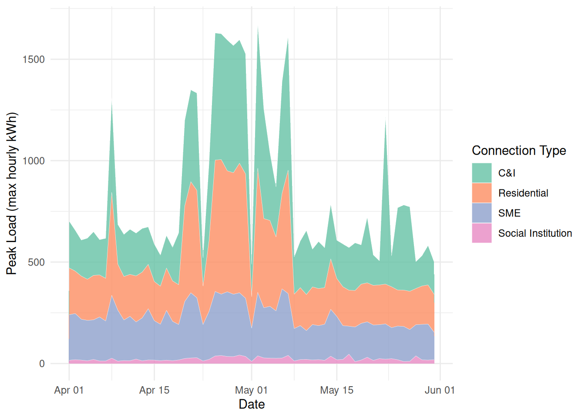

![]()
# Install packages - leaving here for context for others
install.packages("readxl")
install.packages("writexl")
install.packages("polyglotr")
# didn't end up using polyglotr this time but would be necessary for
# new untranslated dataSolar Mini-Grid Power Consumption Profiles in the DRC
Introduction
This project explores existing power consumption data over a set range of dates from April - May 2026. The data was gathered from an operational solar mini-grid in the DRC providing power to a local community. The goal of the project is to summarize the consumption by category to be able to scale the expected consumption for other sites to predict mini-grid sizing in conflict-ridden areas with minimal on-the-ground data collection. The intent is to group by category and type for the client and be able to summarize statistics on daily and peak power consumption to feed forward to other grid planning projects.
Methods
The data was collected from the IT team at the organization after specifying the intent of the data. After receiving the initial data from the IT team that was gathered from smart meters, the raw data was examined and processed for anonymity. No financial information was included in the pulls. The names of the clients were initially included so that type of enterprise could be inferred in some cases (i.e. school or hospital) then the names were removed before adding the raw data. The data needs to be sorted, matched with business types, and collated to gather usage statistics.
Reading the Data
Since the file is a .xlsx file and not a .csv file, it’s necessary to install the “readxl” and “writexl” packages. There were some initial challenges loading the “readxl” package but it finally worked after uninstalling and re-installing. In hindsight, converting the file to a .csv might have been an easier way to start.
# Load packages
library(tidyverse)
library(readxl)
library(dplyr)
library (writexl)
library(knitr)
library(ggplot2)
# Read data
raw_power_data <- read_excel(here::here("data/raw/Power_consumption_categorized_EN_April_May_2026.xlsx"))Data Exploration Approach
First, view the data and see what needs tidying!
glimpse(raw_power_data)Rows: 165,588
Columns: 7
$ Date <dttm> 2026-04-01, 2026-04-01, 2026-04-01, 2026-04-01, …
$ Category <chr> "Telecom", "Telecom", "Telecom", "Telecom", "Tele…
$ `Customer Code` <dbl> 9822, 7615, 186114, 4531, 3113, 4523, 6921, 4515,…
$ `Customer type` <chr> "C&I", "C&I", "C&I", "C&I", "C&I", "C&I", "C&I", …
$ `Hourly kWh Average` <dbl> 1.240459770, 0.000000000, 5.529666667, 3.97404761…
$ `Hourly kWh Max` <dbl> 4.75000000, 0.00000000, 24.24000000, 10.44000000,…
$ `Daily kWh` <dbl> 107.9200000, 0.0000000, 331.7800000, 333.8200000,…dim(raw_power_data)[1] 165588 7# calculate average daily kWh per customer type
customer_grouped <- raw_power_data %>%
group_by(`Customer type`) %>%
summarize(mean_daily_kWh = mean(`Daily kWh`), total_count = n())
# 4 main types of customers to examine
# view the existing customer categories
category_grouped <- raw_power_data %>%
group_by(Category) %>%
summarize(mean_daily_kWh = mean(`Daily kWh`, total_count = n()))
# 21 groupings of client type with drastically different power consumptionThe initial data set is 165,588 rows and 7 columns. The column names are “date”, “category”, “customer code”, “customer type”, “hourly kWh average”, “hourly kWh Max”, and “daily kWh”. There are initial values showing of 0.000000 under some entries, and many repeating categories or types.
Examined the average daily kWh for each major category and type for reference.
Initial Data Tidying
Fortunately the dates are already in YYYY-MM-DD format, so R has been able to ingest those directly.
The data needs to sort out any 0.000000 and NA entries to not skew the mean values for the categories. The column names that have spaces need to be renames to remove the need to include “`” in every call-out.
# rename the data columns
clean_power_data <- raw_power_data %>%
rename(
category = Category,
customer_code = `Customer Code`,
customer_type = `Customer type`,
kWh_avg_hourly = `Hourly kWh Average`,
kWh_avg_max = `Hourly kWh Max`,
kWh_per_day = `Daily kWh`
)
# convert NA text to NA data entry in the sheet
power_na_clean <- clean_power_data %>%
mutate(across(where(is.character), ~ na_if(., "NA")))
# count the number of NA data entries
na_counts <- power_na_clean %>%
group_by(customer_type) %>%
summarise(na_count = sum(is.na(category)))
# count the number of duplicated entries
power_dupes <- power_na_clean %>%
count(customer_code, Date) %>%
filter(n > 1)
# Remove rows with all 0.0000 values (some 0 values are OK since
# it's by day, not every client will use power every day)
power_filtered <- power_na_clean %>%
filter(if_any(c(kWh_avg_hourly, kWh_avg_max, kWh_per_day), ~ .x != 0))
# remove the 12 entries duplicated customer codes per day
# placing this step after the 0.000 removal in case there were errant entries
power_deduplicated <- power_filtered %>%
distinct(customer_code, Date, .keep_all = TRUE)
# sure enough, 3 of the 12 duplicates were a 0.00 entry. 9 other dupes removed.There are >32,000 NA category entries in SME type. Removing all of these entries will skew the data significantly. Instead, keep NA category and treat as a general category.
The first time calculating the NA values was 0… which is incorrect because there were many NA values in the Category column. It was necessary to first convert the text “NA” entries into actual NA entries.
Sorting out the entries with all 0 valued for the three numerical columns and removing duplicate entries on the same day for a customer code, the data set shrank from 165,588 rows to 149,254 rows. This now just includes data that has usable numerical values.
# save as a new processed .xlsx file
write_xlsx(power_deduplicated, here::here("data/processed/power_filtered.xlsx"))Results
# Begin to summarize the sorted data to see power consumption trends
# First, sort by customer type and category to look for grouped trends
summary_by_group <- power_filtered %>%
group_by(customer_type, category)
# Next, view the statistics for average kWh per day and wrap these into a
# usable table format
stat_power_table <- summary_by_group %>%
summarise(
Total_Observations = n(),
Mean_Daily_kWh = mean(kWh_per_day, na.rm = TRUE),
SD_Daily_kWh = sd(kWh_per_day, na.rm = TRUE),
Min_Daily_kWh = min(kWh_per_day, na.rm = TRUE),
Max_Daily_kWh = max(kWh_per_day, na.rm = TRUE)
)
# Display the table
stat_power_table %>%
kable(
digits = 2,
col.names = c("Type", "Category", "Total Observations", "Mean Daily kWh", "SD Daily kWh", "Min Daily kWh", "Max Daily kWh"),
caption = "Summary of Daily kWh Consumption by Type and Category"
)| Type | Category | Total Observations | Mean Daily kWh | SD Daily kWh | Min Daily kWh | Max Daily kWh |
|---|---|---|---|---|---|---|
| C&I | Telecom | 761 | 188.01 | 104.66 | 0.01 | 698.25 |
| C&I | Water Pumping | 92 | 109.51 | 40.21 | 0.69 | 228.84 |
| Residential | Residential | 108542 | 1.25 | 1.75 | 0.00 | 60.88 |
| SME | Carpentry | 299 | 3.22 | 2.36 | 0.00 | 11.06 |
| SME | Cold Storage | 110 | 6.63 | 3.84 | 0.15 | 18.38 |
| SME | Factory | 190 | 18.31 | 23.31 | 0.02 | 103.85 |
| SME | Fuel Station | 641 | 5.11 | 4.24 | 0.01 | 20.26 |
| SME | Garage | 61 | 3.50 | 2.53 | 0.63 | 12.71 |
| SME | HoReCa | 242 | 2.98 | 3.98 | 0.00 | 19.76 |
| SME | Mill | 1670 | 24.68 | 22.11 | 0.01 | 134.68 |
| SME | NGO | 190 | 0.55 | 0.44 | 0.02 | 2.02 |
| SME | Religious | 234 | 1.39 | 1.78 | 0.01 | 19.60 |
| SME | Residential | 61 | 2.35 | 0.65 | 0.65 | 4.07 |
| SME | Salon | 174 | 2.11 | 1.63 | 0.00 | 6.50 |
| SME | School | 61 | 0.47 | 0.10 | 0.26 | 0.73 |
| SME | Tailoring | 119 | 0.55 | 0.52 | 0.00 | 1.81 |
| SME | Welding | 1086 | 2.68 | 4.45 | 0.00 | 35.96 |
| SME | NA | 29318 | 1.70 | 2.09 | 0.00 | 36.29 |
| Social Institution | Carpentry | 61 | 5.01 | 2.36 | 0.32 | 11.04 |
| Social Institution | Hospital | 472 | 2.71 | 2.09 | 0.00 | 13.41 |
| Social Institution | NGO | 118 | 4.77 | 3.65 | 0.54 | 14.33 |
| Social Institution | Orphanage | 60 | 1.28 | 0.42 | 0.09 | 2.39 |
| Social Institution | Public Administration | 124 | 2.18 | 2.24 | 0.01 | 6.70 |
| Social Institution | Religious | 3144 | 1.40 | 1.50 | 0.00 | 11.48 |
| Social Institution | School | 616 | 1.78 | 2.16 | 0.00 | 27.32 |
| Social Institution | NA | 817 | 1.85 | 2.19 | 0.00 | 12.54 |
This table shows the general spread for each type and category of clients. Next, make a box plot to see this graphically and compare spread of data. Since the scales for the data are so different between types, show the 4 different box plots on different scales. Use this to examine the different categories in each type.
Daily kWh usage for Households is shown in Figure 1.
# Figure 1: Residential
summary_by_group %>%
filter(customer_type == "Residential") %>%
ggplot(aes(x = category, y = kWh_per_day, fill = category)) +
geom_boxplot(outlier.alpha = 0.05, show.legend = FALSE) +
coord_cartesian(ylim = c(0, 7)) +
labs(title = "Residential Profiles", x = "Category", y = "Daily kWh") +
theme_minimal() +
theme(axis.text.x = element_text(angle = 45, hjust = 1)
)
Standard rates for households show a tighter distribution around 1 kWh, but there is a concentration of high-use households around 4-5kWh that may be operating small businesses out of their residence.
Daily kWh usage for Social Institutions is shown in Figure 2.
# Figure 2: SME
summary_by_group %>%
filter(customer_type == "SME") %>%
ggplot(aes(x = category, y = kWh_per_day, fill = category)) +
geom_boxplot(outlier.alpha = 0.05, show.legend = FALSE) +
coord_cartesian(ylim = c(0, 55)) +
labs(title = "Small Medium Enterprises", x = "Category", y = "Daily kWh") +
theme_minimal()+
theme(axis.text.x = element_text(angle = 45, hjust = 1)
) 
Standard rates for most categories of SME are below 10kWh, while several categories such as Mill and Factory are higher. There is a large difference between values within the SME type.
Daily kWh usage for Social Institutions is shown in Figure 3.
# Figure 3: Social Institution
summary_by_group %>%
filter(customer_type == "Social Institution") %>%
ggplot(aes(x = category, y = kWh_per_day, fill = category)) +
geom_boxplot(outlier.alpha = 0.05, show.legend = FALSE) +
coord_cartesian(ylim = c(0, 15)) +
labs(title = "Social Institutions", x = "Category", y = "Daily kWh") +
theme_minimal() +
theme(axis.text.x = element_text(angle = 45, hjust = 1)
)
Standard rates for most categories in Social Institutions are below 5kWh, with the largest usage from NGO and Carpentry. There is a much smaller sample size for Social Institutions which limits the confidence in the spread of the data.
Daily kWh usage from C&I clients is shown in Figure 4.
# Figure 4: C&I
summary_by_group %>%
filter(customer_type == "C&I") %>%
ggplot(aes(x = category, y = kWh_per_day, fill = category)) +
geom_boxplot(outlier.alpha = 0.05, show.legend = FALSE) +
coord_cartesian(ylim = c(0, 500)) +
labs(title = "C&I Profiles", x = "Category", y = "Daily kWh") +
theme_minimal()+
theme(axis.text.x = element_text(angle = 45, hjust = 1)
)
Average C&I usage is significantly higher than the other types, averaging over 100kWh/day.
Now that the spread of daily kWh has been assessed for each type and category, we can look at the general composition of daily power consumption.
Figure 5 Shows the overall daily kWh consumption by customer type.
library(scales)
# Summarize the data by customer_type
pie_data <- summary_by_group %>%
group_by(customer_type) %>%
summarise(total_kWh = sum(kWh_per_day, na.rm = TRUE)) %>%
mutate(
percentage = total_kWh / sum(total_kWh),
label_pos = cumsum(total_kWh) - (total_kWh / 2)
)
# Build a stacked bar chart then a pie chart
ggplot(pie_data, aes(x = "", y = total_kWh, fill = customer_type)) +
geom_bar(stat = "identity", width = 1, color = "white")+
coord_polar(theta = "y") +
geom_text(
aes(y = label_pos, label = percent(percentage, accuracy = 0.1)),
size = 4,
color = "black",
) +
# Clean up the background grid and axis lines from standard ggplot
theme_void() +
labs(
fill = "Customer Type") +
theme(
plot.title = element_text(face = "bold", hjust = 0.5, size = 14),
plot.subtitle = element_text(hjust = 0.5, color = "gray40")
) 
Even though C&I have the largest daily kWh usage, SME accounts for the largest share of energy use, followed by Residential and C&I based on the sheer number of households and SMEs compared to the larger industrial partners. Let’s create one more stacked chart to examine the daily kWh trends over time by type. Aggregated daily totals highlighting average demand is shown in Figure 6.
# Calculate total max consumption during the peak load as a worst case
daily_total_composition <- summary_by_group %>%
# Keep only the rows where the peak load value is not zero
filter(kWh_per_day != 0) %>%
group_by(Date, customer_type) %>%
summarise(
Total_kWh_avg = sum(kWh_per_day, na.rm = TRUE),
.groups = "drop"
)
# Preview the daily kWh values for each type
print(daily_total_composition)# A tibble: 244 × 3
Date customer_type Total_kWh_avg
<dttm> <chr> <dbl>
1 2026-04-01 00:00:00 C&I 2501.
2 2026-04-01 00:00:00 Residential 2235.
3 2026-04-01 00:00:00 SME 1893.
4 2026-04-01 00:00:00 Social Institution 149.
5 2026-04-02 00:00:00 C&I 2447.
6 2026-04-02 00:00:00 Residential 2147.
7 2026-04-02 00:00:00 SME 1817.
8 2026-04-02 00:00:00 Social Institution 164.
9 2026-04-03 00:00:00 C&I 2438.
10 2026-04-03 00:00:00 Residential 2191.
# ℹ 234 more rows# Plot the chart with daily composition separated by type
ggplot(daily_total_composition, aes(x = Date, y = Total_kWh_avg, fill = customer_type)) +
geom_area(alpha = 0.8, color = "white", linewidth = 0.1) +
labs(
x = "Date",
y = "Daily Load (average kWh/day)",
fill = "Connection Type"
) +
theme_minimal() +
scale_fill_brewer(palette = "Set2") 
It’s also important to understand the peak kWh values to right-size the grid. This comes from the max kWh/h values, taking the maximum load during the highest use point during the day. Let’s first group by day, then sum the value per day and see the composition from different types. This will give insights for the peak rated value for the grid (kWp) and potential back-up sources like diesel gen-sets and hydropower partnerships. Aggregated hourly totals highlighting peak demand periods are shown in Figure 7.
# Calculate total max consumption during the peak load as a worst case
daily_composition <- summary_by_group %>%
# Keep only the rows where the peak load value is not zero
filter(kWh_avg_max != 0) %>%
group_by(Date, customer_type) %>%
summarise(
Max_kWh_peak = sum(kWh_avg_max, na.rm = TRUE),
.groups = "drop"
)
# Preview the daily kWh peak values for each type
print(daily_composition)# A tibble: 244 × 3
Date customer_type Max_kWh_peak
<dttm> <chr> <dbl>
1 2026-04-01 00:00:00 C&I 230.
2 2026-04-01 00:00:00 Residential 231.
3 2026-04-01 00:00:00 SME 225.
4 2026-04-01 00:00:00 Social Institution 16.0
5 2026-04-02 00:00:00 C&I 202.
6 2026-04-02 00:00:00 Residential 209.
7 2026-04-02 00:00:00 SME 228.
8 2026-04-02 00:00:00 Social Institution 18.9
9 2026-04-03 00:00:00 C&I 178.
10 2026-04-03 00:00:00 Residential 212.
# ℹ 234 more rows# Plot the chart with daily composition separated by type
ggplot(daily_composition, aes(x = Date, y = Max_kWh_peak, fill = customer_type)) +
geom_area(alpha = 0.8, color = "white", linewidth = 0.1) +
labs(
x = "Date",
y = "Peak Load (max hourly kWh)",
fill = "Connection Type"
) +
theme_minimal() +
scale_fill_brewer(palette = "Set2") 
The chart shows the contribution of each type to the peak load values. Since this grid is designed to a peak load of 1.3 MW, there are many days in the analyzed period in excess of this value that need a diesel genset or hydropower back-up source. There are also several anomalous time periods that need further investigation because of significant spikes or drops.
Conclusions
The data has shown the following trends and considerations:
- The 2 months of data showed a generally consistent daily load, but the peak load varied significantly during the time frame.
- C&Is made up a significant amount of the daily kWh demand per customer, but was actually slightly less total demand (26%) than SMEs (38%) and residential (33%) customers due to the number of clients total. Social Institutions were a small portion of daily demand (2%).
- SMEs were primarily uncategorized, and there was a huge spread in mean for SME categories that exist, especially highlighting the higher end of demand for Mills and Factories. Social Institution categories were much more consistent at <5kWh/day, but there were several categories with very few customers.
- It was not possible to make claims for general seasonal or year-long trends due to the limited time frame of the data.
Summary of Findings
The evidence presented above gives substantiation for separating out the daily and peak demand profiles for different categories of customers, especially in the C&I (largest by-category demand) and SME (broadest range of demand) assumptions. These considerations will allow for more accurate forecasting of demand for right-sizing future mini-grids in this region by ensuring peak load cases are accurately predicted and total daily demand is allocated correctly.
Questions and Next Steps
With a huge proportion of SMEs still uncategorized (NA), it is difficult to get accurate power consumption values from this which would be beneficial to scale based on the number of customers. Since there are some SME categories that differ significantly in power consumption, it is important to have as much granularity as possible to set predicted consumption values.
It would be good to understand the seasonal variation in power consumption, which will require sourcing more data over time. In addition, it would be interesting to review this data every year to see if average power consumption for residences and SMEs is increasing based on more reliable and affordable access to energy (such as buying more appliances etc.)
Finally, all of this data is from one site in DRC. Ideally, many sites would be included for comparison of regional consumption and see trends in types of customers.